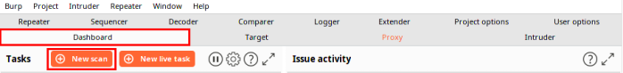
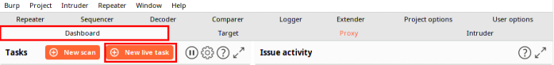

Burp Scanner
*Burp Scanner functionality NOT available in the community (free) version of Burp Suite
1. Burp Scanner have two modes:
◇
Passive scanner → Identify issues based on requests (not initiated not initiated by Burp) and responses already visible to Burp
Dashboard → New Scan
 ◇
Active scanner → Identify issues by sending new requests to the target and analyzing results
Dashboard → New live task
